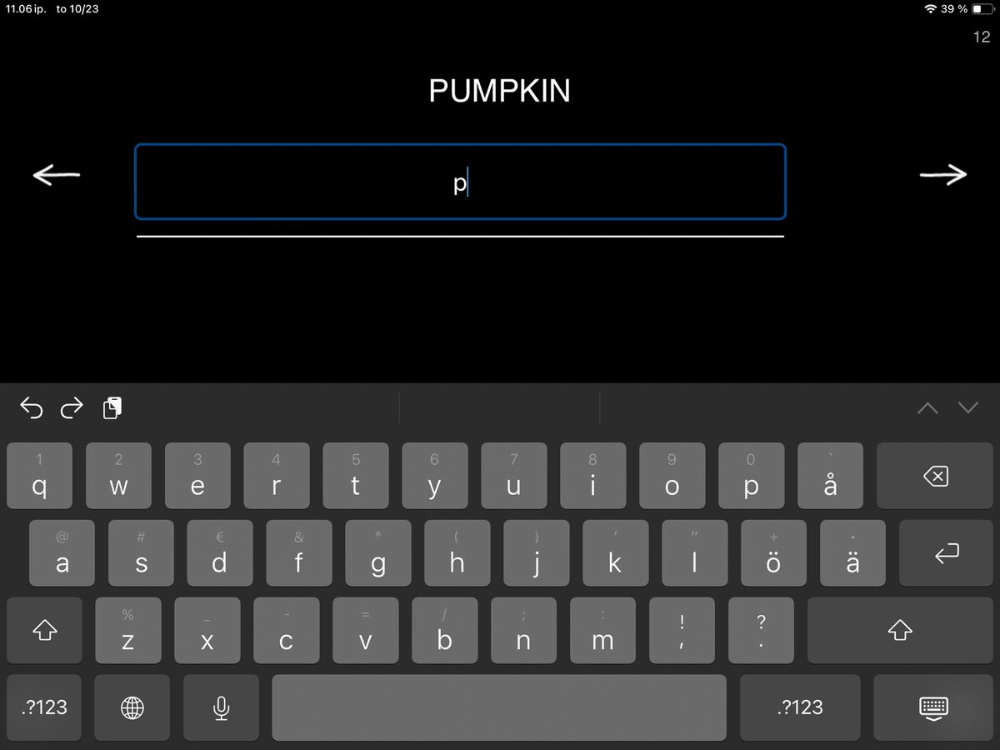
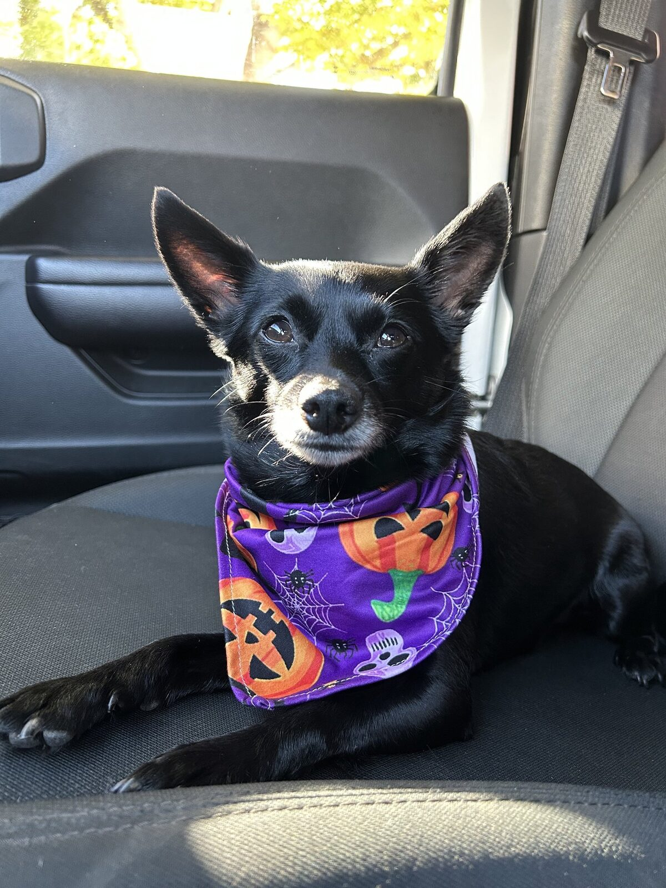

Our next exercise in the Writing category takes us from writing by hand to typing. If you’ve been following along, you know where we’re coming from. If not, I invite you to scroll back to the earlier posts and find out!


When you open Copy Words on Keyboard you see a word and a line on the screen. Tap the line to bring up the iPad’s onscreen keyboard and type the word. At first glance, your patient is just copying a word by typing. But who benefits from this, and why use therapy time for something so simple? Why, I’m very glad you asked!
This seemingly simple task offers countless opportunities to work on different skills. Here are a few examples:
Some patients benefit from visually searching for matching letters one by one. While copying a word, they’re challenging their executive skills: sustaining attention, staying on task, working toward a goal, using working memory, blocking distractions, and recognizing and matching letters. With a little help from a friend (you!), the exercise can also include sound–letter correspondence.
Copying words requires both reading and writing skills. The first task for a patient can be to read and recognize the word in question. Then, typing the letters of that now-familiar word strengthens word analysis and sheds light on how word processing works for them. Can they tap into existing patterns and complete the word almost automatically, or will they need to rebuild it letter by letter? Are they able to stay on task independently? Do cognitive processes support or hinder task performance?
A simple task can build confidence and encourage patients to take on bigger, bolder challenges. This exercise can be an excellent way to re-learn keyboard use or return to digital devices in general.
Observing and supporting clients as they use digital devices for simple, guided tasks can be highly informative when planning future therapy.
The importance of doing this work in therapy and not independently lies exactly there. What can you observe, and how can you build on this simple task?

Hi! What do you see in this picture? Is it 1) an apple, 2) a dog, or 3) a book?
Once your client can confidently navigate a digital device and has mastered copying by typing, it’s time to expand into new tasks that support communication in the digital space. For example, you can send them a photo and ask them to reply with what they see.
The message might read: Hi! What do you see in this picture? Is it 1) an apple, 2) a dog, or 3) a book?
Now your client can respond using their own device, putting those typing and word-copying skills into real use.
Completing a familiar task independently can be an empowering step toward navigating the digital world and successfully sharing information. Little by little, these experiences help rebuild confidence in using digital tools for everyday communication. And it all starts with a simple task: Copy Words on Keyboard!
I also can’t pass up the opportunity to talk a bit about digital devices in rehabilitation. Digital devices are a big part of our daily lives. Like it or not, being able to use a smartphone or tablet is an essential everyday skill, often tied to communication and staying connected with loved ones. For many patients, however, returning to these devices can feel confusing and even daunting.
SanapsisPro and Sanapsis+ are designed with this in mind. In both apps, transitions are intentionally slow, there’s no sudden or distracting audio (e.g., a ping for correct or a buzz for a wrong answer), and users are free to move between exercises without the “punishment” of doing something wrong. This creates a calm and relaxed user experience.
A simple task used in collaboration with a supportive therapist can be especially helpful for patients who feel anxious about digital devices or overwhelmed by today’s fast-paced digital environments. Simply copying a word on screen, calling up the keyboard, and moving between words with the forward and backward arrows can serve as a small step toward a more fulfilling, stress-free use of technology in everyday life.
Stay tuned for the next exercise in the Writing category in SanapsisPro!
Happy Halloween to all from me and my very scary beast pictured above.